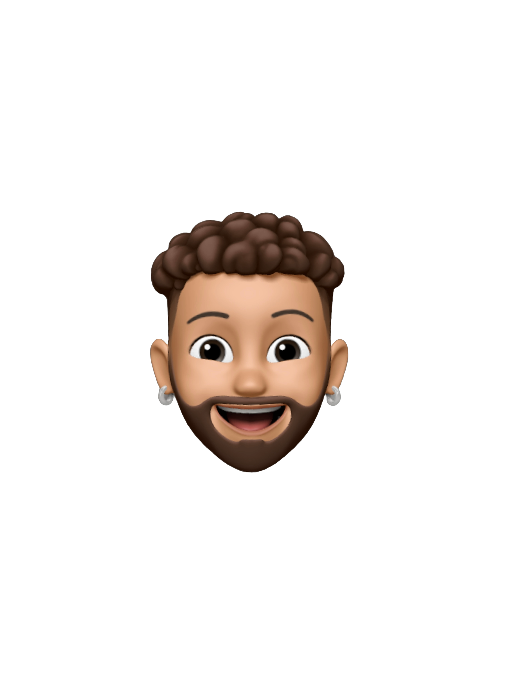

As a Software engineer, Frontend Developr & Designer I design and code beautiful simple things, and I love what I do.

Hi, I'm Meshack. Nice to meet you. Since beginning my journey as a software engineer two years ago. I've worked for agencies, consulted for startups, and collaborated with talented people to create digital products for both business and consumer use. I'm quietly confident, naturally Curious, and perpetually working on improving my creativity. If you click above links you will able to learn more about me.